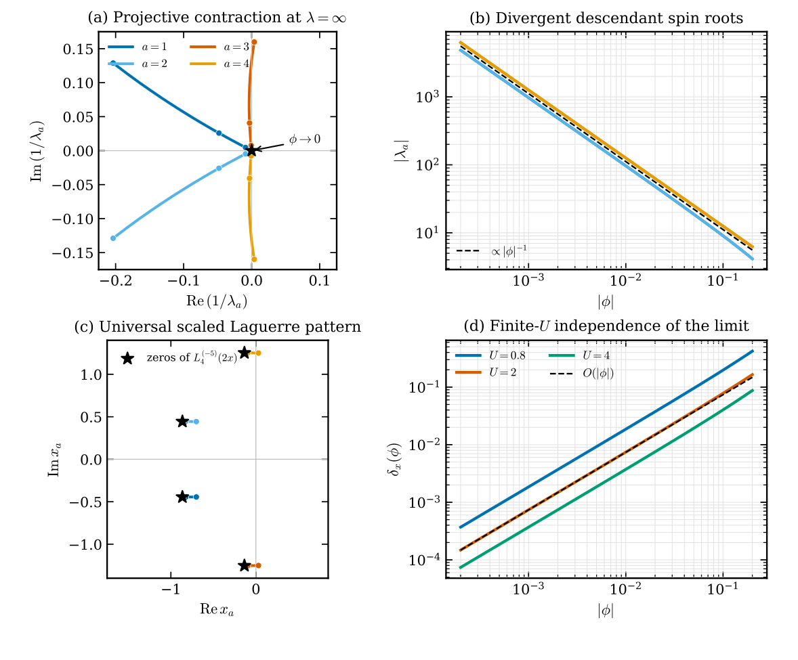

Bethe-root contraction
Inverse spin rapidities coalesce projectively as the twist is removed; scaled descendant roots approach a Laguerre configuration in the specified finite-volume model.
Read preprint · CodeFig. 1, July 30, 2026 manuscript.